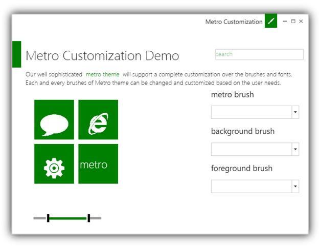

Our well sophisticated metro theme will support a complete customization over the brushes and fonts. Each and every brushes of Metro Theme can be changed and customized based on the user needs.
The following are the brushes that can be customized in Metro Theme.
· MetroBrush.
· MetroBackgroundBrush.
· MetroPanelBackgroundBrush.
· MetroBorderBrush.
· MetroForegroundBrush.
· MetroFontFamily.
· MetroHoverBrush.
· MetroFocusedBorderBrush.
· MetroHighlightedForegroundBrush.
Setting MetroBackgroundBrush property in XAML
|
[XAML]
<syncfusion:ChromelessWindow x:Class="WpfApplication18.MainWindow" Title="Window1" Height="350" Width="525" xmlns:syncfusion="http://schemas.syncfusion.com/wpf" syncfusion:SkinStorage.VisualStyle="Metro" syncfusion:SkinStorage.MetroBackgroundBrush="Green"> </syncfusion:ChromelessWindow>
|
Setting MetroBackgroundBrush property in C#
|
[C#] SkinStorage.SetMetroBrush(this, Brushes.Green); |

Figure 952 : Metro Customization Demo